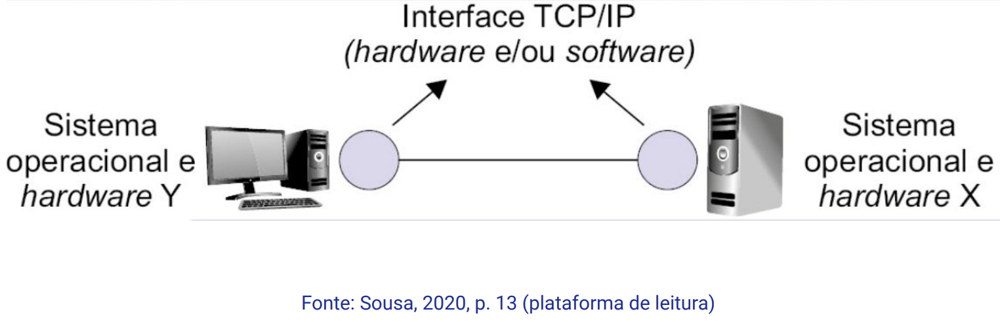
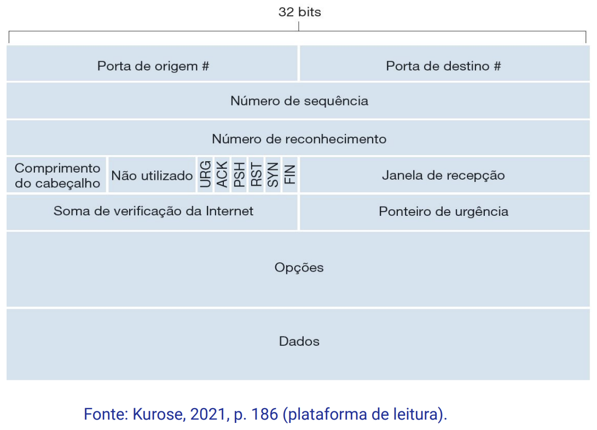
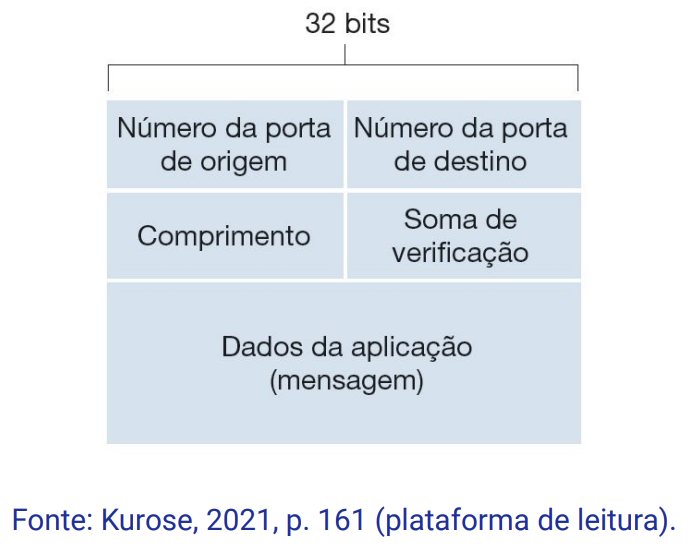
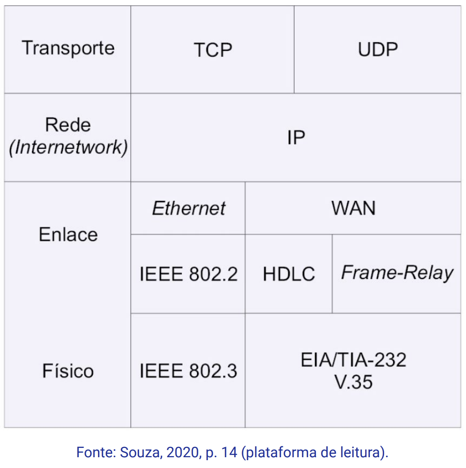
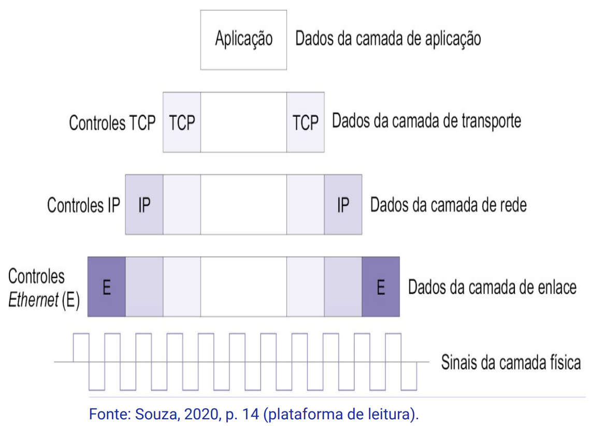
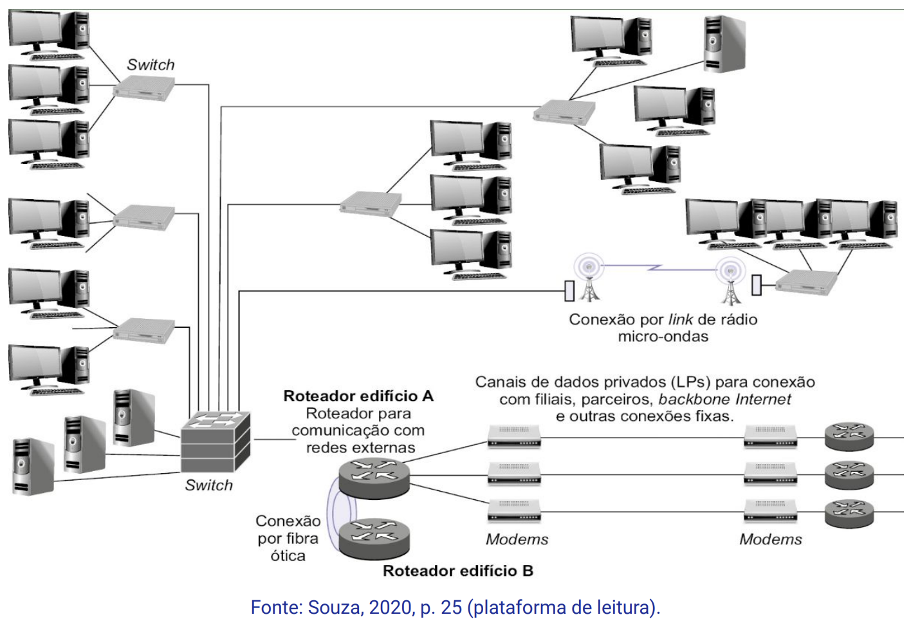

Disciplinas
INFRAESTRUTURA PARA SISTEMAS DE SOFTWARE-T01-2024-2 Concluído
Materiais
Vídeo 1 - [UFMS Digital] Infraestrutura para Sistemas de Software - Módulo 2 - Unidade 1 - Como funcionam os dispositivos de redes sendProf.° ministrante: Carlos Alberto da Silva
Conteúdo
Como funcionam os dispositivos de redes?
- Hub (repetidor)
- Switch (bridge)
- Roteador
- Backbone corporativo
- Modem
- Gateway
Como funcionam os dispositivos de redes?
Dispositivos por camadas:Modelo de interface TCP/IP
Número da portas (ports) define o tipo de serviço:
- port 110 = pop3 (para receber e-mails)
- port 25 = SMTP (para enviar e-mails)
- port 80 = HTTP (hyper text transfer protocol)
- port 23 = telnet (para acessar e simular terminais de outros computadores)
- port 20 e 21 = FTP (para fazer a transferência de arquivos entre computadores)
Formato do segmento TCP
segmento UDP
Protocolos das camadas
 Encapsulamento e desencapsulamentoAs camadas superiores no modelo TCP/IP e modelo OSI são encapsulados pelo protocolo da camada inferior que recebe os dados.
Todo protocolo, em cada camada, tem uma função específica.
Os dispositivos conectam-se em um camadas, e têm seus protocolos específicos.
Na arquitetura TCP/IP, as interconexões entre dispositivos e as redes são efetuadas:
- por hubs e switches na rede local/intranet;
- e por roteadores nas conexões remotas (internet).
tem função de interligar os dispositivos de uma rede local, por meio de cabos de pares trançados (UTP) ou cabo coaxial.
- conectando as placas de rede dos dispositivos às portas do hub (endereço MAC/cada).
O barramento (ou segmento de rede) é o meio físico de comunicação entre hosts de uma rede local.
 Switch (bridge)
Switch (bridge)
- É mais inteligentes que o hub:
- por isolar os domínios de colisão;
- evita que colisões ocorram em um segmento de rede.
- Isola suas sub-redes (redes locais):
- não re-transmite quadro (frame) desnecessário;
- utiliza uma tabela de endereços MAC para encaminhar os quadros (frames).
- Chama-se domínio de colisão da rede local quando os quadros são irradiados a todos os dispositivos ligados ao barramento.
- Em um segmento de rede local, o domínio de colisão ocorre se as placas de rede Ethernet de dois dispositivos tentam transmitir ao mesmo tempo, ocorre uma colisão de dois sinais irradiados no segmento.
- É um conjunto de segmentos de redes locais interligados por switch (ou bridge):
- em que um quadro de broadcast enviado para todos
- endereço MAC = FFFFFFFFFFF, domínio de broadcast
- Um domínio de broadcast não ultrapassa o roteador, pois o roteador não repassa frames de broadcast.
- São equipamentos que fazem a conexão de redes heterogêneas
- com diferentes protocolos de acesso e compartilhando os meios de comunicação com diferentes usuários
- compreendem e convertem vários protocolos, como frame-relay, HDLC, PPP, FDDI, Token-Ring, Ethernet e outros.
- Para encaminhar, o roteador verifica o endereço IP destino no pacote, e verifica a tabela de roteamento.
- É uma arquitetura central de conexões em uma rede
- como artérias principais pelas quais passa o tráfego de comunicação entre as redes.
Exemplo:
Empresa locada em um edifício, normalmente as redes locais são interligadas por um switch central e as conexões entre as redes.
 Modem- Servem para acessar o computador da empresa pelas linhas telefônicas, diretamente, sem usar a internet
- e podem acessar a rede local por uma conexão telefônica (dial-up).
- Os servidores de comunicação para acesso remoto são dispositivos denominados RAS (Remote Access Server).
Gateway de aplicação
- Reconhece o formato e o conteúdo dos dados
- Exemplo: um gateway de correio eletrônico que converte mensagens SMS para telefone móvel.
- Converte o formato de pacotes de dados de um protocolo de transporte para outro.
- Exemplo: converte pacotes TCP/IP para o protocolo orientado a conexão diferente SCTP.
Referências:
COMER, Douglas E. Redes de computadores e internet. Editora Bookman, 2016. p. 252-262. ISBN 9788582603734. Disponível na Biblioteca Digital da UFMS.
KUROSE, Jim; ROSS, Keith W. Redes de Computadores e a Internet: uma Abordagem Top-down, 8 Edição. Editora Pearson, 2021. ISBN: 9788582605592. p. 250, 493-546. Disponível na Biblioteca Digital da UFMS.
SOUZA, Lindeberg Barros de. Administração de redes locais. 2. São Paulo: Érica, 2020. 1 recurso online. (Eixos). p. 13-24. ISBN 9788536533698. Disponível na Biblioteca Digital da UFMS.
TANENBAUM, Andrew S.; FEAMSTER, Nicholas; WETHERALL, David J.; Redes de Computadores, 6ª Edição. Editora Pearson, 2021. ISBN: 9788582605615. p. 215-225. Disponível na Biblioteca Digital da UFMS.